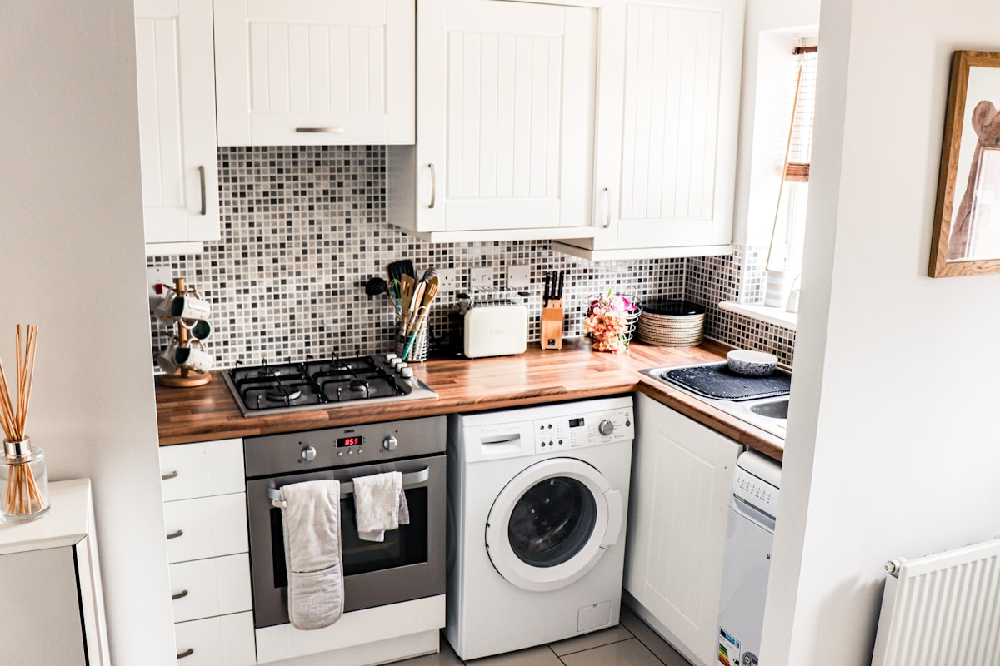

Electrolux Washer, Dryer, Refrigerator & Range Repair in Orange County
A front-load washer that won't drain, a dryer that runs but never heats, a refrigerator that quit making ice, an oven that throws an F10. We repair Electrolux washers, dryers, refrigerators, ranges and dishwashers across Orange County. Same-day service available.
5.0 · 156 Google reviewsMon–Sat, 8am–7pm.

What to expect
- Flat $99 diagnostic feeApplied toward the repair if you approve the work.
- Written quote firstItemized, before any work starts.
- 90-day parts, 30-day laborWarranty on every repair.
- Same-day serviceCall or request online.
Family-owned since 2017 · Licensed, bonded & insured
What Orange County Customers Say
From our 156 verified 5-star Google reviews
AG fixed my Electrolux dryer and was very professional. He was efficient, genuine, and had great customer service. I highly recommend him and would definitely use his superb technical service again!
AG was the best repair person I have ever had at my house. Honest Nice knowledgable. Can't say enough about him. He works on all appliances I will be using him for everything going forward. He fixed both our washer and dryer.
We have had AG our technician work for us in a couple of occasions. He is great and has done an amazing job with our fridge at least twice. He has saved from wasting money on new appliances.
Thanks AG
From Call to Fixed: How an Electrolux Repair Works
Here is exactly what happens from your first call to a fully working Electrolux appliance.
Request a RepairCall or Request Online
Reach us at (949) 629-5365 or use the contact form. Tell us the appliance, the model number if you can find it, and the symptom or error code. Same-day visits are available.On-Site Diagnosis
A technician arrives in a 2-hour window and tests the part behind the symptom, whether that's a drain pump, heating element, igniter, sensor, inlet valve or board, instead of guessing.Upfront Quote
You get a clear, itemized quote before we start. The $99 diagnostic fee is credited toward the repair if you proceed. No surprise charges at the end.Repair & Warranty
Many repairs finish on that visit. If a part has to be ordered, the quote says so, along with the wait. Every repair carries a 90-day parts and 30-day labor warranty: if the same problem returns within 30 days, we come back at no charge.
Pricing & Discounts
- $99 diagnostic fee: applied toward your repair when you approve the work. If you decide not to proceed, the $99 covers the visit.
- Multi-unit visits: first unit $99, each additional unit on the same visit $49.
- 20% off labor for repeat customers and seniors 60+ (cannot combine with other offers).
Estimates vary by brand, part availability, and diagnosis. Final quote is provided before repair. See full pricing guide
- Applied toward the repair when you approve the work
- Itemized written quote before any work starts
- You decide whether to proceed
Every Electrolux We Repair, and What Usually Goes Wrong
Electrolux sells front-load laundry, French door and side-by-side refrigerators, ranges, wall ovens, cooktops and dishwashers in the US. These are the faults our technicians see most often on Electrolux appliances in Orange County homes.
- Front-Load Washers
- Water left in the drum, a door that won't unlock, or a puddle at the front usually comes down to a clogged drain filter or pump, a worn water inlet valve, or a torn door boot seal. Bearing noise and a violent spin are the other calls we get. Stacked washer and dryer units get the same checks.
- Dryers
- A dryer that tumbles but blows cold air most often has a burned-out heating element or a blown thermal fuse. The fuse usually blows because the vent is packed with lint, so we check airflow before we swap parts. A worn belt or idler pulley is behind the squeal and the drum that won't turn.
- Refrigerators
- French door and side-by-side models fail in a few predictable ways: a warm fresh-food section from a failed fan or defrost fault, and ice and water that quit. An overdue water filter, a frozen fill tube and a bad water inlet valve cause most ice complaints, and the ice maker module is the next suspect.
- Ranges, Wall Ovens & Cooktops
- An oven that won't heat points to a bake or broil element, an igniter on a gas model, or a temperature sensor that has drifted. Door lock faults and convection fans round out the usual list. The F-codes in the next section tell us where to start.
- Dishwashers
- Standing water means a clogged filter, a failed drain pump or a pinched drain hose. A dishwasher that won't fill points to the water inlet valve, and one that won't start can be a door latch or a control board fault.
- Older ICON Models
- We repair older Electrolux ICON units too. The model number on the rating plate tells us what to look for before we arrive, so read it to us when you call.
Electrolux Error Codes: F10, F90, E21 and More
The codes below come from Electrolux's own support and service documentation. Meanings vary by model and platform, and an older or different washer can show a different code for the same problem. Treat the code as a starting point, not a diagnosis.
Ranges and ovens
| Code | What Electrolux documents | Where we look first |
|---|---|---|
| F10 | Thermal runaway | The oven shut down because its temperature got out of control. Stop using it until it is checked. We test the temperature sensor and the control board. |
| F30 | Open temperature probe | The sensor circuit reads as broken. Usually the probe itself or its wiring. |
| F31 | Shorted temperature probe | The sensor circuit reads as shorted. Same suspects: the probe and its wiring. |
| F90 to F94 | Door lock fault | The lock motor, latch or switch is not reporting the right position. We check the lock assembly and its wiring. |
Front-load washers
| Code | What Electrolux documents | Where we look first |
|---|---|---|
| E11 | Fill time too long | The washer is not getting water fast enough. We check the supply valves, the hose screens and the inlet valve. |
| E13 | Water leak in the tub, or the pressure sensor | We look for a leak at the hoses and seals first, then test the pressure sensor. |
| E21 | Water not pumping out fast enough | A slow drain. The drain filter, the pump and the drain hose are the usual culprits. |
| E41 | Door or door-lock fault | The washer cannot confirm the door is closed and locked. We test the latch, the lock and the door switch. |
Seeing a code that is not listed here? Call (949) 629-5365 and read it to us along with the model number. We would rather tell you what it points to than have you guess.
Is Electrolux the Same as Frigidaire?
They're sister brands. Frigidaire and Electrolux both belong to the Electrolux Group, the Swedish appliance maker, and Electrolux even publishes a combined Electrolux and Frigidaire limited warranty document. Frigidaire is the group's larger brand in North America. Electrolux sells under its own name too.
Sharing a parent means some parts and some platforms overlap. It does not mean everything does. A part that fits a Frigidaire won't always fit your Electrolux, and the two brands don't always use the same error codes. That's why we ask for the full model number before we order anything.
If your appliance turns out to be a Frigidaire, our Frigidaire appliance repair page covers that brand in detail.
Electrolux Warranty: Call Electrolux First If You're Still Covered
Electrolux's standard limited warranty is one year from delivery on most categories, per Electrolux's US warranty page; limitations apply. Some products carry extra parts coverage after year one.
- Washing Machines
- Additional parts coverage: 10 years on the motor and a lifetime on the inner wash tub.
- Dishwashers
- Additional parts coverage: years 2 to 5 on the racks and the electronic control module, and a lifetime on the stainless tub and door liner.
- Refrigerators
- Additional parts coverage on models other than single door: years 2 to 5 on the cabinet liner and the sealed refrigeration system.
If your Electrolux is still inside one of these windows, contact Electrolux first. A covered repair costs you nothing, and it goes through them, because we are an independent repair company, separate from Electrolux. Once the window has closed, or the failure is something the warranty doesn't cover, that's when to call us.
Electrolux Repair Costs: What to Expect in Orange County
Most Electrolux faults cost a fraction of what a replacement would, so repair is usually the sensible call. These are typical Orange County ranges, not quotes.
| Repair Type | Typical Range |
|---|---|
| Service call / diagnostic (generally credited toward repair if you proceed) | $75 – $100 |
| Refrigerator evaporator fan / air damper / control board | $180 – $380 |
| Gas range oven igniter / sensor | $180 – $340 |
| Dishwasher drain pump / clogged sump | $180 – $340 |
| Front-load washer door boot replacement | $200 – $380 |
| Dryer heating element / igniter / thermal fuse | $180 – $320 |
| Refrigerator sealed system (compressor / leak) | $400 – $800 |
Estimates vary by brand, part availability, and diagnosis. Final quote is provided before repair.
Our company diagnostic fee is a flat $99 in Orange County, credited toward the repair if you proceed. See our full appliance repair cost guide for broader Orange County pricing context.
Electrolux repair across Orange County
Universal Appliances Repair Group Inc. repairs Electrolux front-load washers, dryers, refrigerators, ranges, wall ovens, cooktops and dishwashers across Orange County, California. Our technicians test the failed part and give you a written quote before any work begins.
We serve Westminster, Irvine, Anaheim, Santa Ana, Huntington Beach, Costa Mesa and surrounding cities, with same-day service available. Call (949) 629-5365 or book online to schedule an Electrolux repair visit.
What Orange County Electrolux Owners Ask Us
The most common questions from Electrolux owners across Westminster, Irvine, Anaheim, Santa Ana, Huntington Beach, and surrounding Orange County cities.
Still have a question? Call (949) 629-5365.
One Electrolux Home, Every Appliance Covered
Electrolux laundry, kitchen and refrigeration often live under one roof. One call handles the whole lineup.
- Washer RepairFront-loaders and top-loaders: slow drains, door boot leaks, no-spin, and bearing noise.
- Dryer RepairElectric and gas dryers that won't heat, take too long, or won't start: elements, igniters, and thermal fuses.
- Refrigerator RepairFrench door and side-by-side units: cooling loss, defrost faults, and ice makers that quit.
- Oven & Stove RepairGas and electric ranges, wall ovens: dead igniters, failed bake elements, sensor drift, and door lock faults.
- Dishwasher RepairNot draining, not filling, standing water, and control-panel faults.
- Frigidaire RepairElectrolux's sister brand: refrigerators, ranges, dishwashers, and laundry.
- Repair Cost GuideTypical Orange County price ranges by appliance and repair, so you know what to expect before you call.
- All ServicesEvery appliance we repair across Orange County, from refrigerators to wine coolers.
Need Electrolux Repair in Orange County?
Same-day service available, and every repair carries a 90-day parts, 30-day labor warranty. Call now or book online.